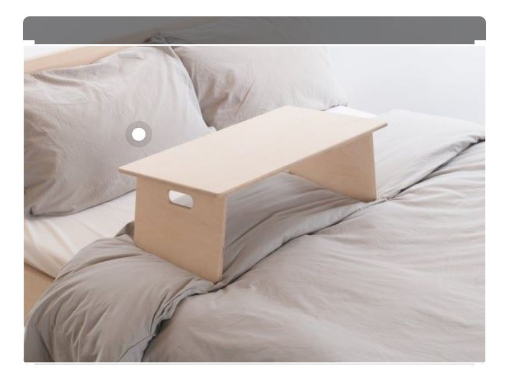
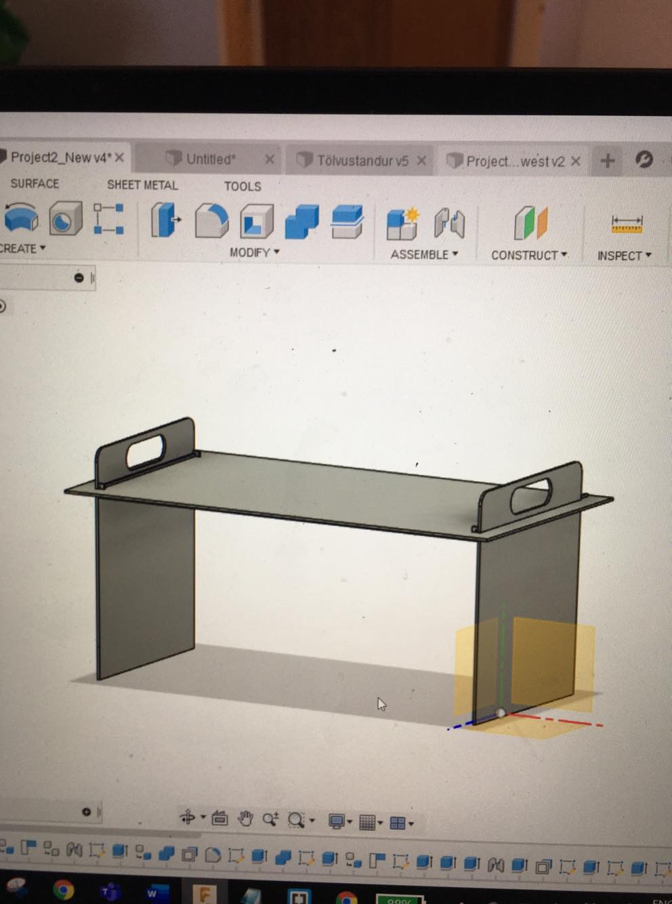
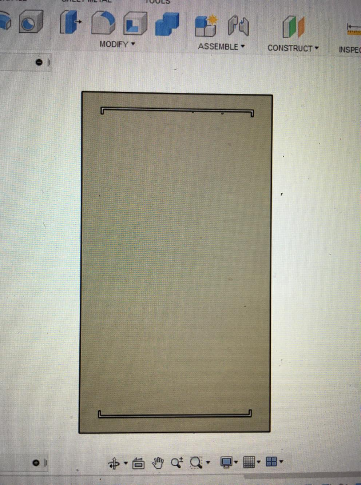
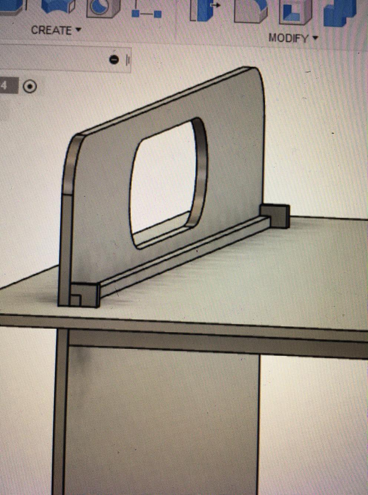
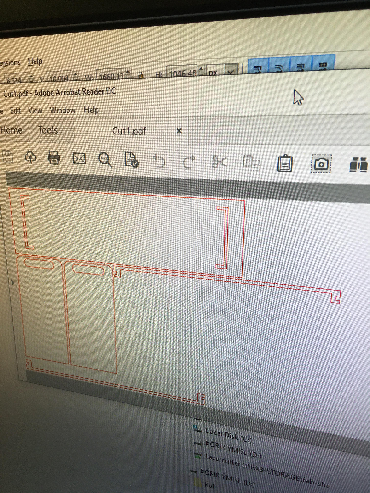
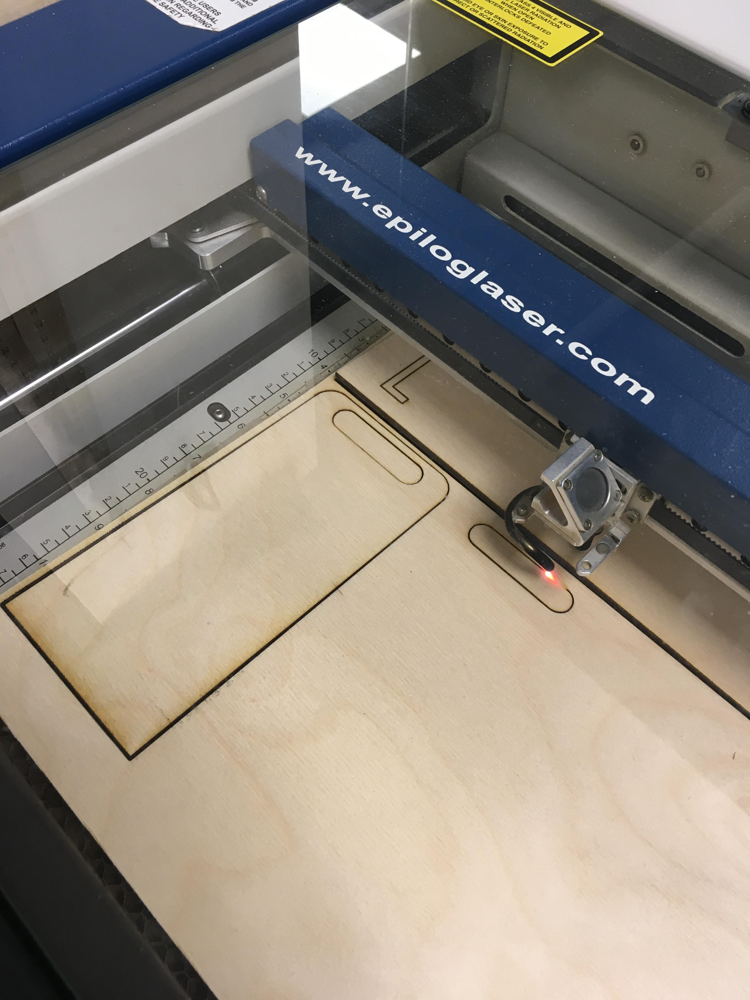
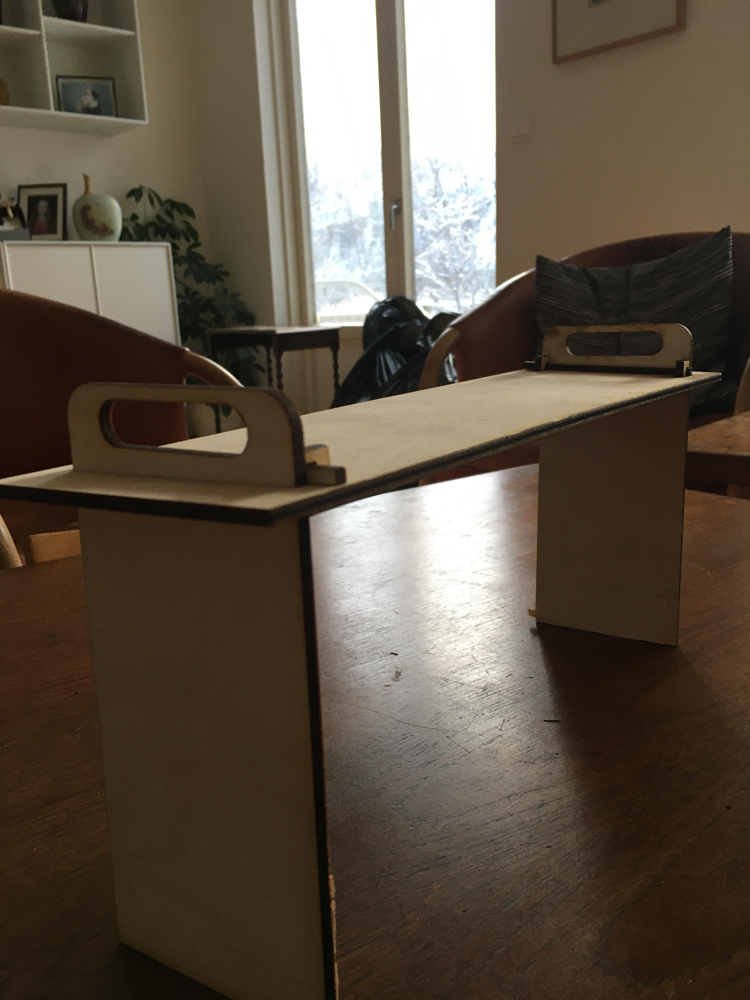
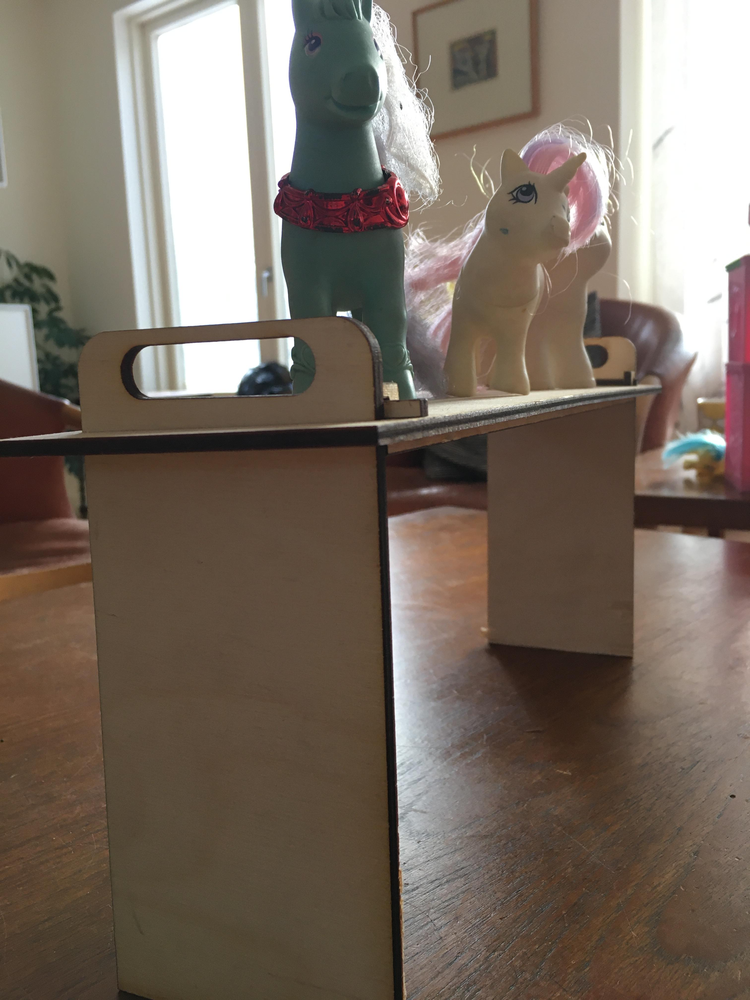
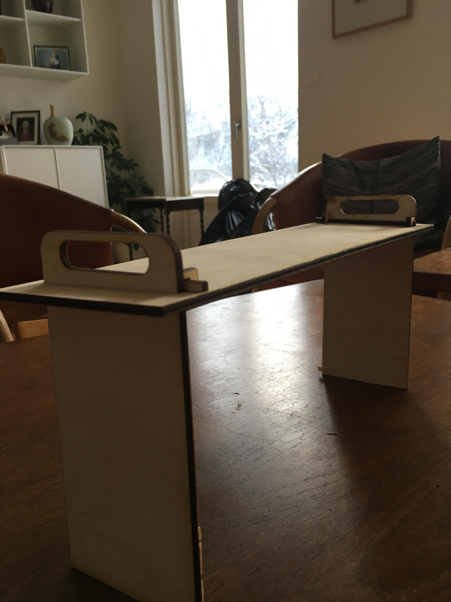
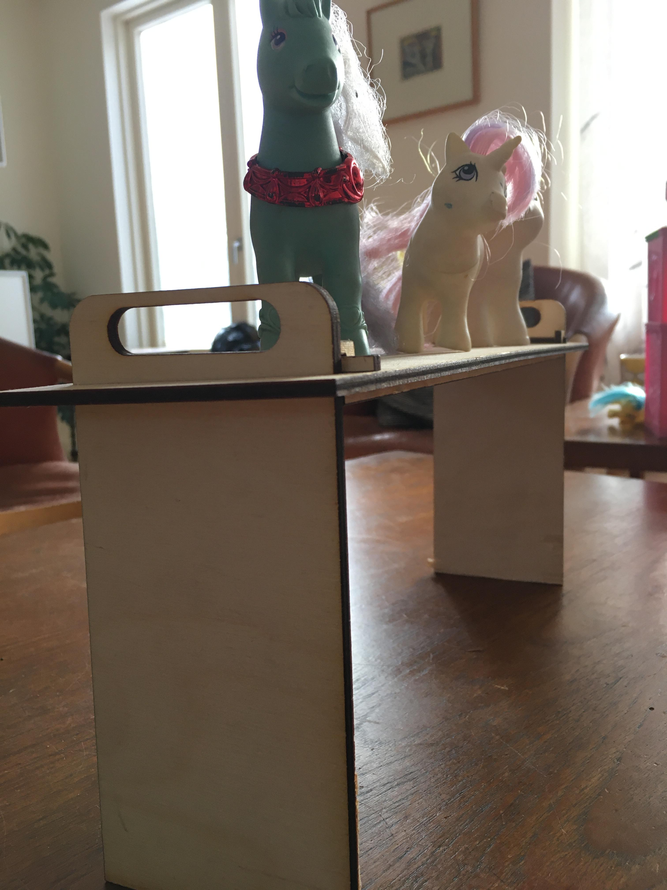

Project 2: Computer-aided design and cutting
For Project 2, I was supposed to use a CAD software to build a parametric design of a pressfit construction kit. Then cut my design with a laser cutter and at the same time, document the process and upload my design files. I wanted to design something that I could actually use. My idea was a laptop stand to use in my bed, that could also be used as a breakfast in bed platform. I started by learning parametric design by watching a tutorial that was linked on the teachers website. After that I searched on google for inspiration and I found this simple but elegant desing on pinterest. It can be seen here below:

I followed this tutorial to practise designing a laptop stand. I completed the tutorial and created this laptop stand here:

Then I decided to create another design that was more similar the design on pinterest.

I used these parameters to be able to change the design when I want.

The original idea was to try out this design in a smaller scale and then scale it up to real size when we start Project 4.. Because I would like to create a real laptop stand that I could actually use.
So in the beginning I created the legs. I created both of them at the same time and then set the distance between them to be the parameter, LegWidth.

Then I created the top plate on top of the legs, and cut out the profile of the legs into the top plate. They are the horizontal cut lines in the image. I also cut the profile of the supports into the main plate and they are the small vertical cut lines at the end.

After assembling those two units I created this support system:

The idea was to constrain the legs from bending so I created these guys:

The profile of these supports were also cut into the top plate so they would fit. Then I created a simple 4x4 mm bar to prevent those supports from falling down:

Those bars then slide between the two supports and constrain the support from falling down:

When everyting is put together the support system looks like this:
Then I went to my local Fablab to laser cut my design. However, when I arrived in Fablab I noticed that my design was uneccesarily large so I scaled my design down by decreasing my parameters and fixing all relevant sizes. Now that all the designs were ready, I created a sketch from every surface of my designs, and saved them as a dxf file. I went to Inkscape and open my dxf files, I adjusted document properties to landscape and 300x600 mm, put line thickness to 0.02 mm and line colour to red. I saved this document as a pdf so it looked like this:

I opened file > print and then I adjusted the print properties of the laser cut printer to the desired settings for a 4 mm mdf material. Those settings were provided to us by the local Fablab staff. After adjusting the printer I put my mfd plate in the printer as started the cutting process:

After everyting was cut out I assembled my design together so it looked like this:

 



The Design files
Here you can download a zip file that contains the whole project, the top plate, side plate and the supports.The workload
- 5. February: 3 hours, learning parametric design in Fusion and drafting my idea.
- 7. February: 1 hour, updating my desing
- 8. February: 4 hours, completing my design and laser cutting
- 9. February: 2 hours updating my website
- 10. February: 1.5 hours updating my website